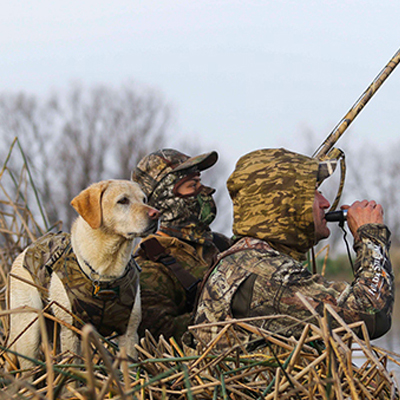

Best Events
Can I hunt on Sunday in Connecticut? Sunday hunting is allowed on licensed private shooting preserves and regulated dog training areas when the operator has permission from the town. Hunting may also take place on Sunday at permitted field trial events. Archery deer hunters can hunt on Sundays on private land only in Deer Managemen t Zones 1, 4b, 5, 6, 7, 8, 9, 10, 11, and 12 (zone map). Deer Management Zones 2, 3, and 4a are NOT open to Sunday archery deer hunting. Landowners hunting with a bow during the "Free Landowner Deer Season" on properties located within Deer Management Zones 1, 4b, 5, 6, 7, 8, 9, 10, 11, and 12 may also hunt on Sundays. All archery deer hunting on Sundays must take place at least 40 yards away from blazed hiking trails. What is "Prima Facie Evidence" of hunting?
Prima facie is a Latin expression that means "on its first evidence, " or "by first instance," or "at first sight." A literal translation from Latin to English would be "from first face." Thus, prima facie is applied to hunting as follows: if a person possesses a loaded hunting implement while at or while entering or leaving an area where a reasonable person would believe the objective was to take wildlife, it would be prima facie evidence of hunting. However, an exception to this regulation allows a person to be in possession of a rifle or shotgun with ammunition in the magazine one hour before sunrise during the regulated deer and turkey firearms hunting seasons, as long as a live round is not in the chamber of the rifle or shotgun.
The opportunity to fly fish for three of the West Country’s most exciting and iconic fish, the wild trout, the sea trout and the bass. Allowing a separate day for each species gives time to fully appreciate these truly wild fish and their surroundings. Our guides will take you night fishing for sea trout, followed by a day on the river for wild brownies, and then a day on the coast fly fishing for bass. This challenge is aimed at experienced anglers who can cast competently and walk a mile. Suitable tackle can be provided if necessary.
Price: £500 per person (inclusive accommodation)
The workshop begins 7:30 p.m. on Friday with a “hands-on” specimen preservation session. The registration will be through 4HOnline. If you do not have a 4HOnline profile, you will need to make one. The profile creation is found on the same page as the profile login. Online registration opens February 1st. Registration is limited so do not delay. Registration closes: March 15th (or when the workshop fills.) Here is your chance to become certified to teach the 4-H Hunting and Outdoor Skills project of the Shooting Sports program. Participate in active learning as you become acquainted with this challenging, yet FUN project.
Price: £500 per person (inclusive accommodation)
The opportunity to fly fish for three of the West Country’s most exciting and iconic fish, the wild trout, the sea trout and the bass. Allowing a separate day for each species gives time to fully appreciate these truly wild fish and their surroundings. Our guides will take you night fishing for sea trout, followed by a day on the river for wild brownies, and then a day on the coast fly fishing for bass. This challenge is aimed at experienced anglers who can cast competently and walk a mile. Suitable tackle can be provided if necessary.